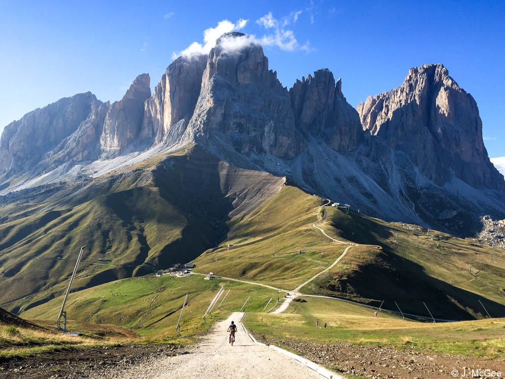
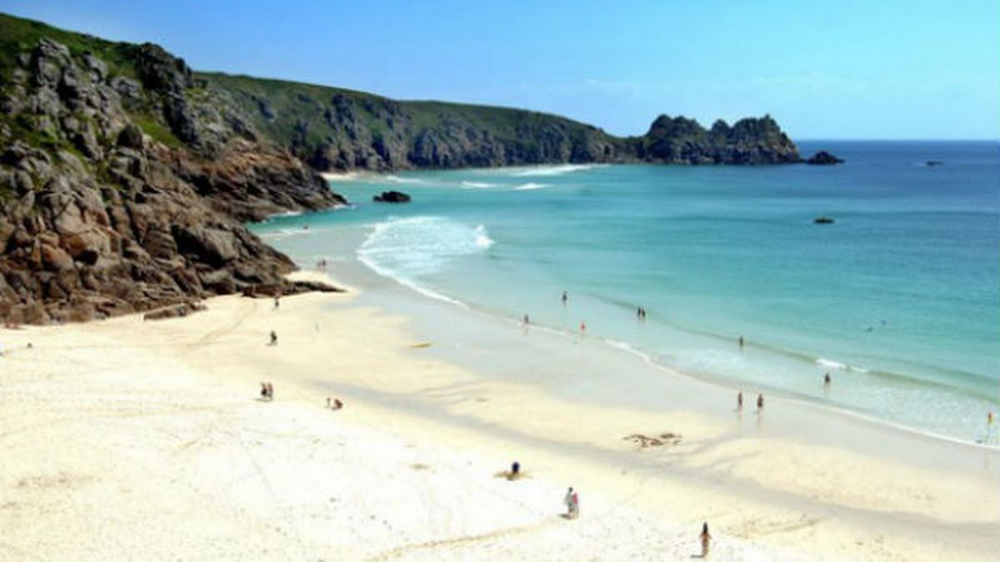
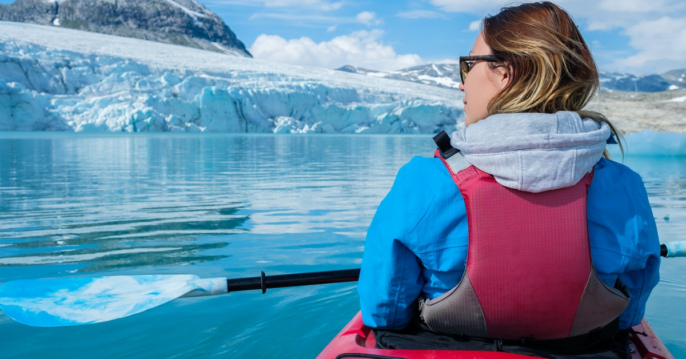
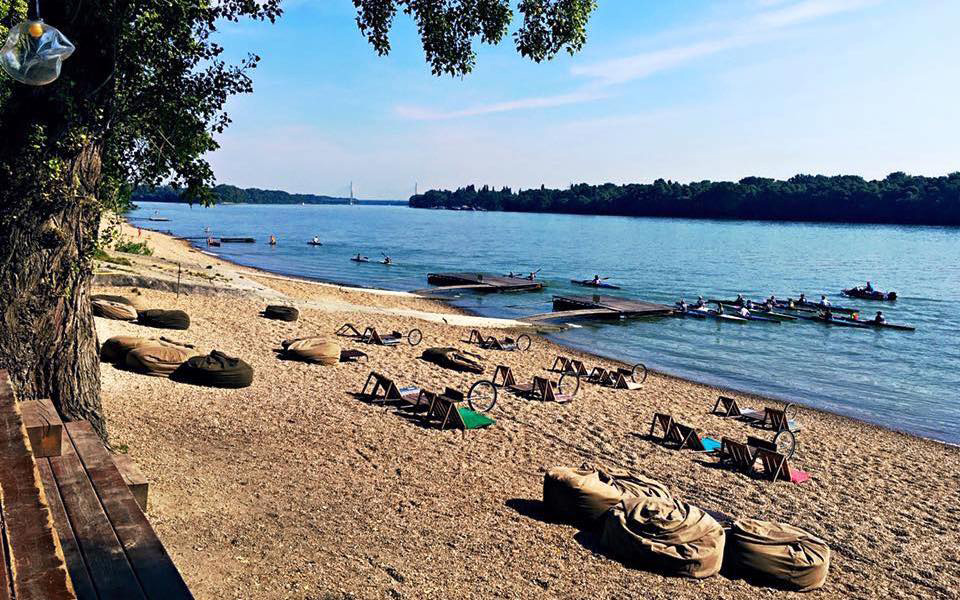

Fun things to do in Europe
Take a walk on London's Primrose Hill

The city is famous for its royal parks, but there’s something particularly special about a stroll on Primrose Hill. On the way up, look out for "Shakespeare’s Tree," an oak that was first planted in 1864 to honor Shakespeare’s birth centuries before (it’s ceremoniously replaced by a new one every 100 years); and, if you can, save turning around to see the skyline until you get to the very top—it’ll be worth it. Time your walk for sunset and watch the sky grow orange over landmarks like Canary Wharf, the Millennium Wheel, and St. Paul’s Cathedral in the distance. It’s a view that moves even the most cynical of Londoners.
Hit the slopes of the Italian Dolomites

Spend a few days skiing down Cortina's groomed slopes—and make sure to break for a few Aperols on the Rifugio Averau terrace—followed by nights on the town with great food and drink. Unlike French ski resorts, where you'll likely spot ski boots under the table, Cortina implores you to ski home, shower, and step into something smart each evening. Start at Cafe La Suite, then move onto P126, and make sure to take in the cavalcade of dolce vita glamour parading down Corso Italia, the winter scene warmed by soft amber lights and large glasses of red wine.
Bike ride along the coast in Cornwall

Bicycle from Wadebridge to Padstow, along the British coast in Cornwall, where the sea is a thousand shades of blue and the land is wild and open. There are bike rental shops at the start of the route, with bikes for all ages. Hop on, making a pitstop at the roadside train carriage [the Atlantic Coastal Express] that serves delicious coffee, lemon drizzle cake, flapjacks. Coming in to Padstow, the whitewashed town is incredibly pretty. Queue up for chef Rick Stein's fresh catch, or, frankly, amble the narrow back streets for local meat pasties (aka a meat hand pie) and fish and chips covered in salt and vinegar, which you can eat on the harbor wall watching the seagulls and boats come in.
Marvel at glaciers in Norway

Norway’s Svalbard is a beautiful archipelago deep inside the Arctic Circle. Book a stay on an expedition ship, such as Quark Expeditions’ Ocean Adventurer, to get up close to epic glaciers, see giant-tusked walruses, and spot mighty polar bears against the white-on-white expanse. Speaking to the onboard scientists and naturalists, you also hear about—and witness—the stark reality of climate change. The takeaway lesson is that if we all make one change for good, the ripple effect could help to save this extraordinary region.
Spend a day at Roman Beach outside Budapest

To do Budapest like a local in the summertime, head to this ramshackle promenade of food and drinks vendors in the woods along the Danube in North Buda, where the vibe is one part Fellini, one part Jersey Shore. You'll sit on beach chairs on the pebbly banks eating fried fish and langos, those distinctly Hungarian hubcap-sized discs of fried bread, drinking Aperol spritzes or local specialty, froccs, a mixture of wine and soda water. The return by riverboat ferry, with the wind in your hair and Parliament glowing in the late afternoon light, is one of the city's greatest pleasures.